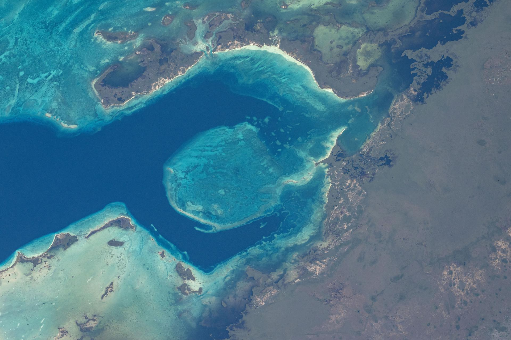

Glass in any browser
Chromium bends whatever is behind an element. Safari and Firefox can't, so there the glass bends the picture the
page names as its backdropSource, with a shader. Drag the lens and the panel.
drag me

Chromium bends whatever is behind an element. Safari and Firefox can't, so there the glass bends the picture the
page names as its backdropSource, with a shader. Drag the lens and the panel.